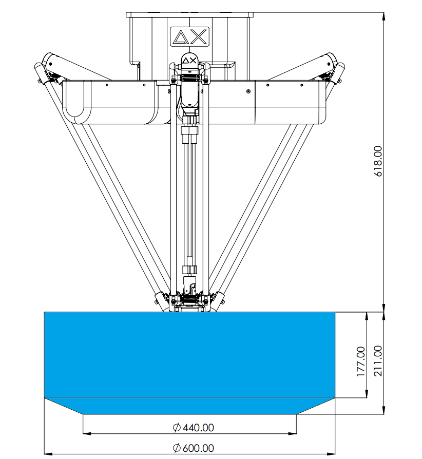
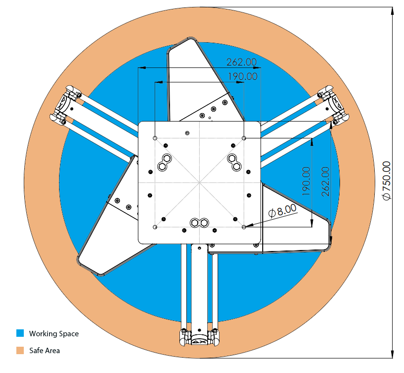
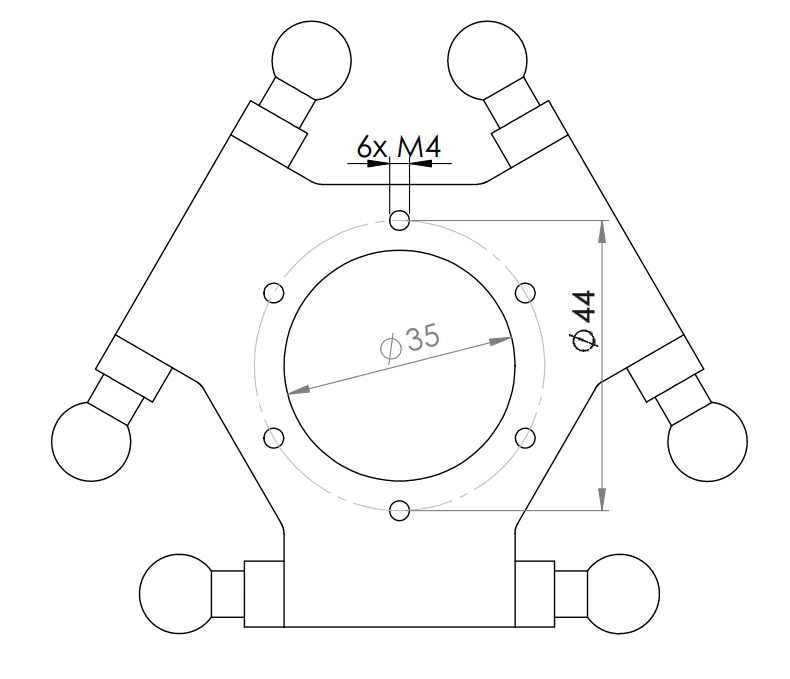
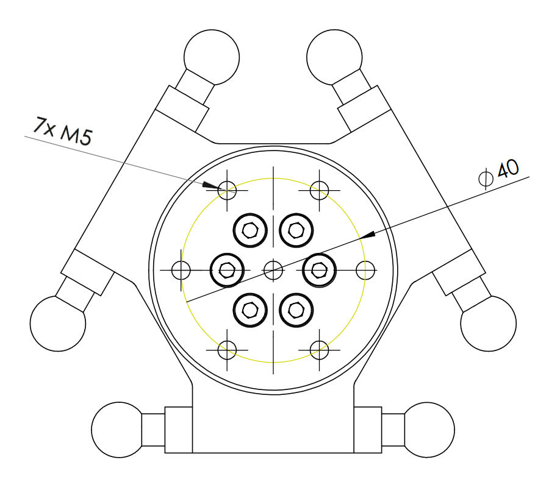
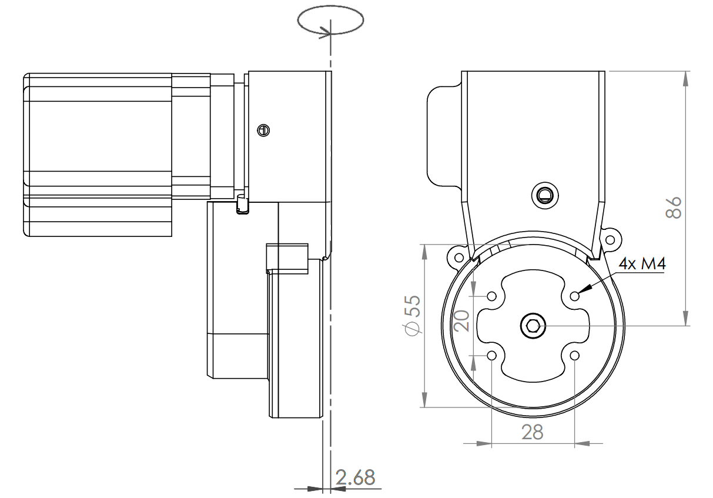
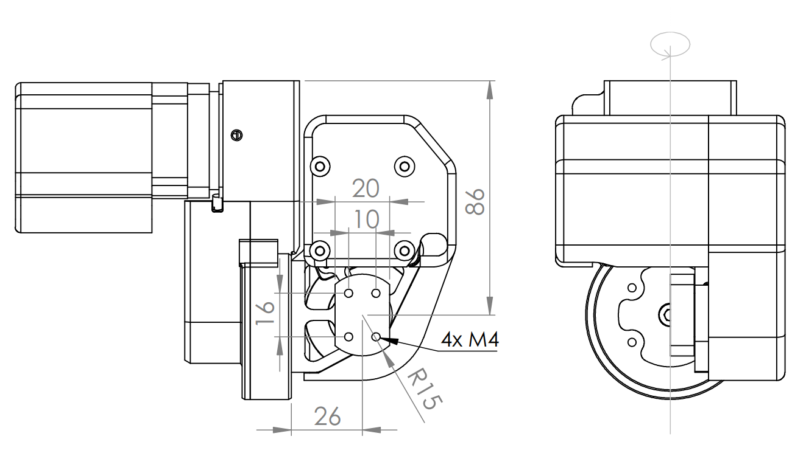
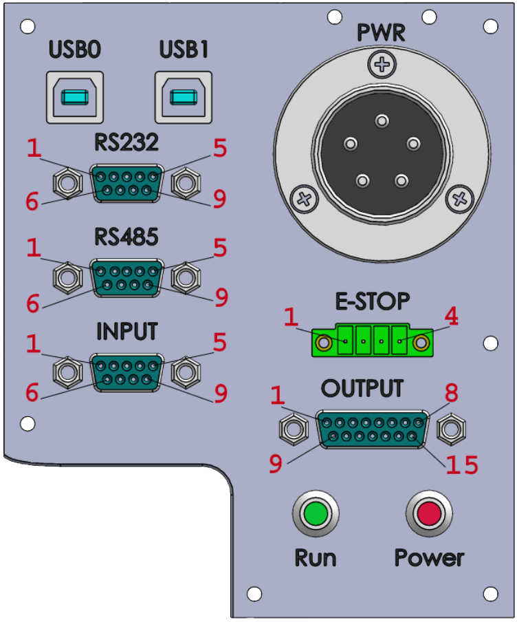
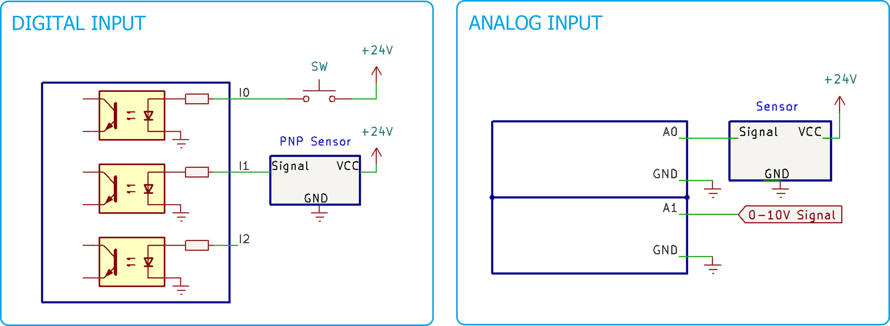
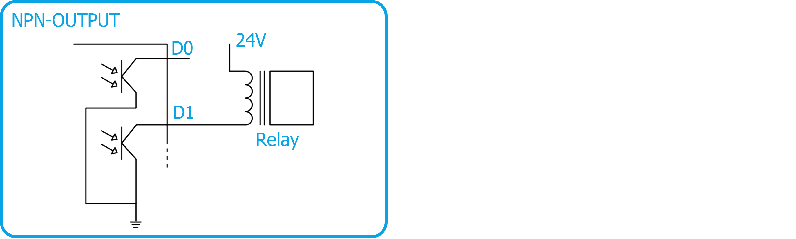

Delta X S V5 D600 Specifications¶
Basic Parameters¶
| Parameters | Specifications |
|---|---|
| Working space | D = 600 mm, H = 211mm |
| Max payload | 2 kg |
| Max speed | 3 m/s |
| Max accel | 50 m/s2 |
| Repeatability | ±0.15 mm |
| Position accuracy | ±0.15 mm |
| Number of axes | 3/4/5/6 |
| Power supply | 24VDC - 40A |
| Weight | 27 kg |

Electrical Parameters¶
| Components | Specifications |
|---|---|
| Controller Board | Delta X S Board (ARM Cortex-M7) |
| Communication | USB, UART, Etherner, RS232, RS485 |
| Input | 2 Analog Input, 4 Digital Input |
| Output | 8 Digital Output |
Mechanical materials¶
| Part | Materials |
|---|---|
| Upper Arm | Aluminum plate |
| Lower Arm | Carbon fibre tube |
| Base frame | Aluminum |
| Moving base | Aluminum |
| Motor mounted | Aluminum |
| Body cover | 3D printed (PLA) |
Working Space¶
Reach¶

Safe Working Area¶

Moving Base Dimensions¶
3-Axes Model¶

4-Axes Model¶

5-Axes Model¶

6-Axes Model¶

Wiring & Communicate Ports¶
Mainboard Interface¶

USB0: USB protocol standard, this port can be use to update firmware.
USB1: Another USB standard port, which isolated with all other power supply.
RS232: RS232 protocol port
Pin 2: T1OUT.Pin 3: R1IN.Pin 5: GND.
RS485: RS485 protocol port
Pin 1: RX+.Pin 2: RX-.Pin 3: TX-.Pin 4: TX+.Pin 5: GND.
Input Pins¶
Digital input pin (24VDC/3mA):
Pin 1~4: digital input pins (0~3).Pin 5: GND.
Analog input pins(0-10VDC/0-4096):
Pin 6-7: analog input pins (0~1).Pin 8: 24VDC.Pin 9: GND.
Input Wiring:

Output Pins¶
Digital output pin (24VDC/500mA)
Pin 1~8: digital output pins (0~7).Pin 9~15: GND.
Output Wiring:

E-Stop Button¶
E-Stop button
Pin 1: GND.Pin 2: IN4.Pin 3: IN5.Pin 4: 24VDC.
If emergency button is not enabled, IN4 and IN5 can be use as input pin.
NOTE: Connect any output as shown above, do not load more than 500mA for each output pin.
Contact Us¶
- Store: https://deltaxstore.com
- Website: https://www.deltaxrobot.com
- Email: deltaxrobot@gmail.com
- Phone: +84 38 875 2005